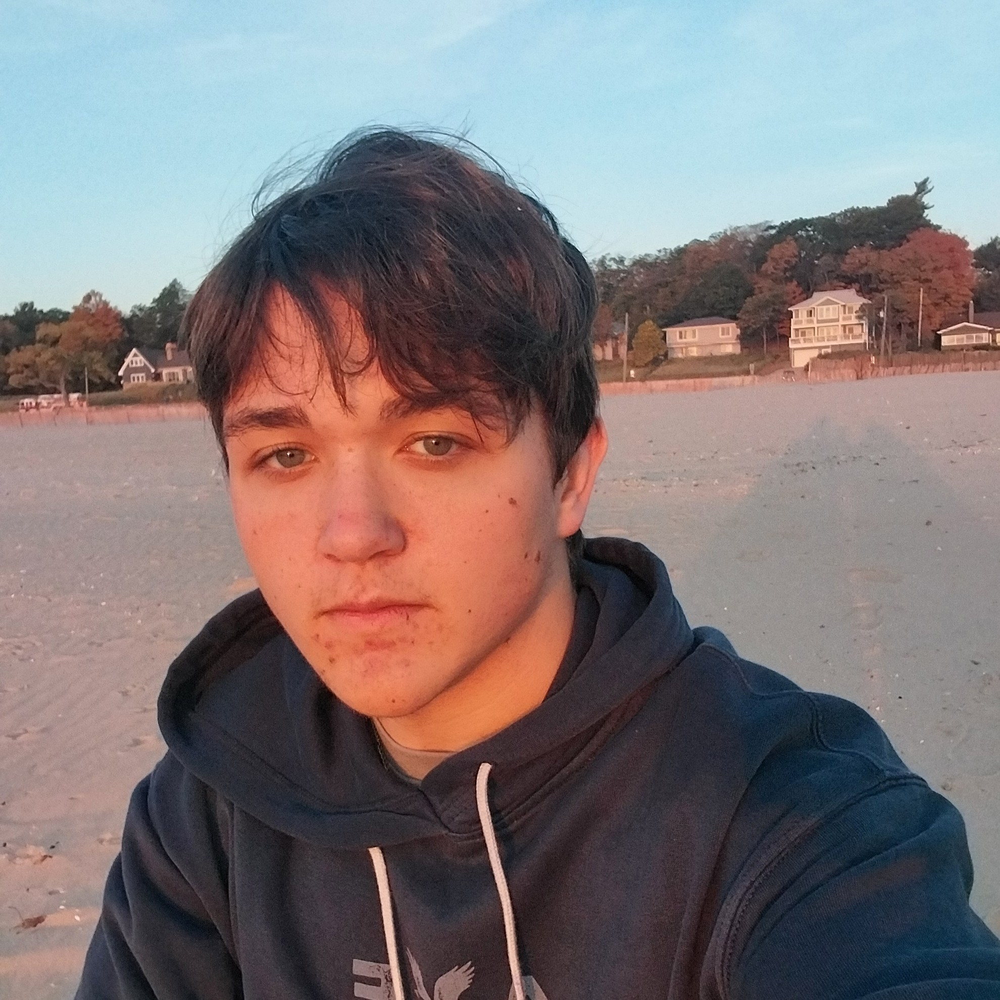

About the Project
The Genesee County Medical History Project is a grassroots initiative at the University of Michigan-Flint to preserve Genesee County, Michigan's medical history. This project aims to cover every major medical institution that has ever existed in the county, collecting information to make a book, interactive website, and possibly a museum exhibit.
This project was founded by undergraduate student Noah Lutz after he discovered a unique issue while researching local hospitals. Hospitals are landmarks, meaning they are places that everyone is assumed to know and aren't covered much. You will rarely see an article explaining in detail where Hurley Medical Center is or how it looks, for example, because it is assumed to be common knowledge. This has led to our understanding of these facilities decaying over time when these facilities fade from common knowledge.
The Genesee County Medical History Project aims to fill this gap. We hope to preserve every aspect of every facility - allowing anyone to learn about a facility that existed at any point in time.
Our Team

Noah Lutz
Founder, Project Director, Lead Researcher/Writer
NoahLutz@umich.eduResearches and writes about medical facilities, works on community outreach, and works on digital tools.

Maggie Collins
Researcher, Archivist
collimar@umich.eduResearches medical facilities and archives collected materials at the Genesee Historical Collections Center.

Dr. Anne Jonas
Faculty Sponsor, Project Manager, Writer/Editor
aejonas@umich.eduHandles project management and oversight while assisting with writing and editing.
Sierra Pilarski
Communications Manager
SierraPi@umich.eduHandles external communication and community outreach for the project.

Dr. John Girdwood
Writer/Editor
JohnGird@umich.eduWorks on writing and editing pieces for the project.

Stephanie Villadet-Gelderloos
Writer/Editor
StepGeld@umich.eduWorks on writing and editing pieces for the project.
Contribute to the Project
Unfortunately, our resources can only get us so far. We hope to source photos, maps, stories, and possibly oral histories of these facilities from our community to allow us to preserve these facilities in full.
Get In Touch